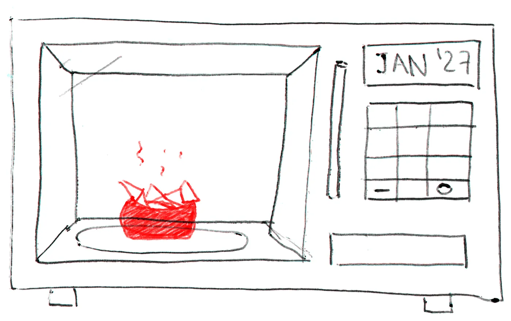

← tornar a la pàgina principal
Data de publicació prevista: gener 2027

sembla que algú s'ha menjat els natxos...
Reheating nachos is internet-speak for producing creative work—such as a song, album, acting performance, lewk, etc.—that is similar to, but (usually) not as good as, one that came before. In other words, to reheat nachos is to build on someone else’s work (or one’s own) without adding anything new or fresh. (https://www.merriam-webster.com/slang/reheat-nachos)
Codi font a GitHub: microones/reheated-nachos